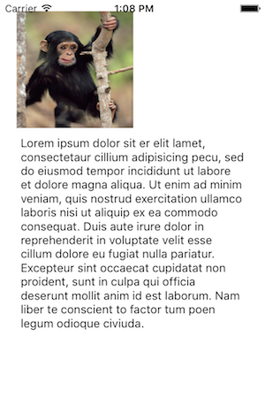
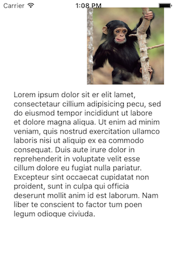

Duration
10 minutes
Lab Goals
Animations can be a great way to add polish to an application or draw attention to an important feature. In this exercise, we'll see how we can apply animations to constraints to animate our monkey image from the left side to the right side of the screen when it is tapped.
You can continue from the prior exercise, or use the completed project in the Exercise 2 folder. The completed project will look something like this:
|  |  |
Steps
Animate the Monkey Image
Let's add an animation, we'll move the monkey image from the left side of the screen to the right when you tap on the monkey.
- Before we write any code, return to the designer and name the left edge constraint of the Monkey Image View to constMonkeyEdge.
- Return to the MonkeyInfoViewController.cs file and add a new method named AnimateImage that takes no parameters and returns
void. - Next, locate the
ViewDidLoadmethod override. -
In the
ViewDidLoadmethod, enable touch interactions on imgMonkey by setting theUserInteractionEnabledproperty totrue. -
Next, in
ViewDidLoadmethod, add a newUITapGestureRecognizerto the imgMonkey that calls our newAnimateImagemethod.
Now, let's provide the code for the AnimateImage method. To move our monkey image, we're going to change the attribute value of the constMonkeyEdge constraint from NSLayoutAttribute.Leading to NSLayoutAttribute.Trailing and vice-versa. This will tie the image to either the left side or right side of the screen.
-
Add a class field of type
boolnamed monkeyIsLeft. Set its default value totrueas the monkey image always starts on the left. -
In the
AnimateImagemethod, add code to remove the constMonkeyEdge constraint from the view. -
Next, in
AnimateImage, flip the value of the monkeyIsLeft boolean, we will do this each time we call the method to track where the monkey is. -
Create a new constraint from constMonkeyEdge and change the following values:
-
Pass in the attribute1 and attribute2 parameters and set both to either
NSLayoutAttribute.Leadingwhen the monkey is on the left and toNSLayoutAttribute.Trailingwhen it is on the right. - Pass in a constant value to the new constraint which is the existing constant multiplied by (-1). This will keep the image on the screen.
-
Pass in the attribute1 and attribute2 parameters and set both to either
-
Finally, use the following code to animate the constraint. This utilizes the built-in
UIViewanimation system and will animate the constraint change over a 2-second interval using a linear animation. We also callLayoutIfNeededto ensure that other affected constraints are adjusted properly by the image movement.
UIView.Animate (1.5, () => {
this.View.AddConstraint (constMonkeyEdge);
this.View.LayoutIfNeeded();
});
Bonus: limit the animation to portrait
As a final bonus, see if you can add the required code to ensure that the monkey is only animated when the device is in portrait mode. You will need to make two changes to the code to address this:
-
Ignore taps when the device is in landscape. You can use the
UIApplication.SharedApplication.StatusBarOrientationvalue to figure out the current orientation. -
Make sure to call
AnimateImagewhen the device is transitioned into Landscape and the monkey is on the right-side.
The completed solution has this code if you want to check your work, or just see one way to implement this behavior.
Summary
In this exercise, we used the UIView animation API to animate constraint changes.